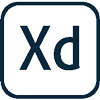

my skills

html

css
javascript
react
sass
php
symfony
git hub

De formation
Projet
- Définir et concevoir une solution digitale
- Réduire son empreinte écologique avec l'écoconception web
- Démarches à suivre pour une solution digitale UI/UX
- Réalisation de maquette d'une application avec Adobe XD
- Créer la représentation graphique d'une application
- Développement digital avec langages de programmation JavaScript/PHP
- Apprendre à déployer une application avec Heroku
- Consolider et acquérir les savoirs et savoir-faire.
- Acquérir une bonne connaissance des métiers du Web et une bonne appréhension des nouvelles technologies de communication.
- Maîtriser la conception de sites depuis un cahier des charges jusqu'à la réalisation finale.
- Apprentissage de langages HTML5, CSS3, JavaScript et des outils de versionning que sont Git et GitHub.
- Utilisation de Sass, le Pattern 7-1
- Apprendre la création de sites web depuis une maquette.
- JavaScript, ReactJs et React Native.
- Reconversion professionnelle, optimisation de CV, recherches d'opportunités professionnelles, élaboration de lettres de motivation et simulation d'entretien d'embauche.
- Création d'un site web pour une entreprise de nettoyage de véhicule.
- rendez-vous téléphonique et physique, avec le client
- elaboration du cahier des charges
- création de la charte graphique et du logo
- Différentes propositions aux clients (3 propositions)
- mise en application de la charte graphique avec utilisation de WordPress
- création d'un thème enfant et en PHP.
- Gestion des commandes, des matières premières, de la réception à la transformation, du stockage au chargement des camions et l'entretien du moulin.
- Suivi de la prise d'eau en rivière ou captée dans des puits, pour devenir de l'eau potable. Entretien des réservoirs et du réseau de distribution.